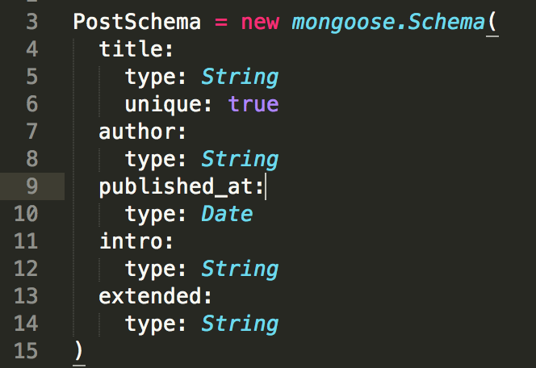

新卒向け勉強会その6?
naoki 04/21
人間って、全体像が見えていないと、なんだか分かった気になれないと思いませんか？
今日はウェブアプリケーションがどう動いているのかの入門編です．
もう一つは、ウェブアプリケーションをどのように構造化するかの入門編です．
ウェブアプリケーション
A web application is an application that is accessed by users over a network such as the Internet or an intranet.
by wikipedia
全体像
なんだかいろいろあるな．めんどくさ．．
まずは言葉を覚えよう
サーバと物理サーバ
サーバだけだと、プロセスなのか、マシンなのか定かじゃないから、わざわざ物理サーバと言ったりするよ．
1. ウェブサーバ
定義: ウェブプロトコル(~HTTP)でクライアント（~ブラウザ）とやり取りするサービス（~プロセス）．またはコンピュータ．
ブラウザからリクエストを受け取って、(データベースから引っ張ってきて)ブラウザにレスポンスを返すプロセス(マシン)だよ．
2. DBサーバ
データベースとのやり取りを管理してくれるプロセス（マシン）だよ．
3. アプリケーションサーバ
アプリケーションの機能（多くの場合は、DBとUI間の情報の制御）を実行するプロセス（マシン）のことだよ．
これが一番重要だよ．
4. プロキシサーバ
リクエストを受け取る最上流に位置して、色々やってくれるよ．単純な構成なら置かないよ．
- リバースプロキシ
- 負荷分散
- ssl
- キャッシュ
- 静的ファイル配信
- などなど
全て同じ物理サーバでもOK
プログラムはどこに書く？
どうやって書く？
ある程度決まった構造が必要
構造？？
- パターン化したものは覚えやすいし、理解しやすい．
- 同じコードをまとめることで、コード量を減らすことが出来る
- 難しい処理を隠蔽出来る
みんなで共通の構造を使おう
- 共通理解が進む
- 共通言語にもなる
そこでMVC: Model-View-Controllerパターンを使おう
先に注意事項です．
フレームワーク病はこじらせないように気をつけて下さい． だいたいです．こういうものは．
重要なのは、要求されている“機能”や“生産性”を満たせるかどうか、です．
コントローラ
どのリクエストが来たら、どのモデルとどのビューを使うかを制御する
ビュー
モデルをどのように表示するかを制御する．
テンプレート
htmlのひな形．
モデル
アプリケーションの根幹！！！！
モデル
データベースからのクエリマッピング、結果のマッピングを主に行なう．それ以外でも、機能の中心となる計算、制限、制御を行なう． ！！！リクエストや表示方法、ユーザの状態に対して無関心であること！！！
なぜ、モデルは ！！！リクエストや表示方法、ユーザの状態に対して無関心であること！！！ でなくてはならないのか？？
- リクエストや表示方法、ユーザの状態は別個コントローラやビューが制御する．
- 条件分岐が多いと制御できなくなる．．
- コードがクリーンになる
- 理解しやすい
- テストしやすい
補足！！
- 実はMVCには色々な解釈がある．
フレームワークによって、モデルとバインドする機能はビューが持っていたり、ロジックをコントローラが持っていたり、、様々．
- 亜種もある
MVVM: Model-View-ViewModelとか、MOVE: Model-Operation-View-Eventなど．
- データバインディングの有無
クライアントサイドだと、データバインディングがある場合があって、そうするとコントローラが薄くなるんだ．ちなみにwin8にはあるけどiosは無いよ．（最悪だね！）
MVCフレームワークの有名どころ
サーバサイド
ruby
- rails
python
- django
- web2py
node.js
- express
php
- cakephp
- symfony
MVCフレームワークの有名どころ
クライアントサイド
- backbone.js
- ember.js
- knockout.js
- angular.js
番外編
- cocoa touch
サーバサイドとクライアントサイドのMVCに触れてみよう！
express.jsとember.jsで作る簡易ブログサイト
ここで使うフレームワーク・ライブラリ（と技術）
node.js (event driven web+app server)
express.js (server side framework)
ember.js (client side framework)
jade (server side template engine)
handlebars (client side template engine)
mongodb (document db)
mongoose (ORM)
まずは言葉を覚えよう
node.js
Node.js is a platform built on Chrome's JavaScript runtime for easily building fast, scalable network applications. Node.js uses an event-driven, non-blocking I/O model that makes it lightweight and efficient, perfect for data-intensive realtime applications that run across distributed devices.
node.js
webサーバとappサーバをシングルプロセス、シングルスレッドで回す(これがevent driven)優れもの．軽量で速くて取り回ししやすいよ．機能は少ないよ．
express.js
node.js上で動くサーバサイドフレームワーク．最小限の機能しかないので、githubからじゃんじゃんライブラリを突っ込んで使う．
ember.js
機能拡張が激しいクライアントサイドフレームワーク．
以下玄人向け．
1.0RC版がようやく2013/2に出た．テンプレートバインディング、ルーティング、コンポーネント開発、DB接続、リレーション管理などすごい勢いで追加中．ただし根幹のember-dataのdocumentはまだ無い．．bindingのパフォーマンスもかなりいい（nashibao調べ）
mongodb
略)キング君まかせ
mongoose
ORM(ODM): プログラム内の“オブジェクト”とデータベースのテーブル行（ドキュメント）間のマッピングを自動的に行なってくれる．クエリなども抽象化できて簡単に書ける．
サーバサイドのMVCの構造（express.js）
クライアントサイドのMVCの構造（ember.js）
モデル（サーバサイド）

コントローラ（サーバサイド）
モデル（クライアントサイド）
コントローラ（クライアントサイド）
テンプレート（jade+handlebars）

最後にもう一度注意点です．
プログラムはエンジニアにとって便利な道具です．とはいえ、、
技術に捕われすぎて、逆に使われないように気をつけましょう．
最後にもう一度注意点です．
自分にとって重要なのは結局なんでしょうか？そこから逆算して、技術を選択 • 利用出来るといいかなぁと思います．
タスク
- meteor.jsについてscreencastなどを見てみて、100文字以内で感想を述べて下さい．
- ここまでの勉強会について、良かったところ、悪かったところ、こうして欲しいところなどを僕(naoki.shibayama)にメールを投げて下さい．
終わりです．